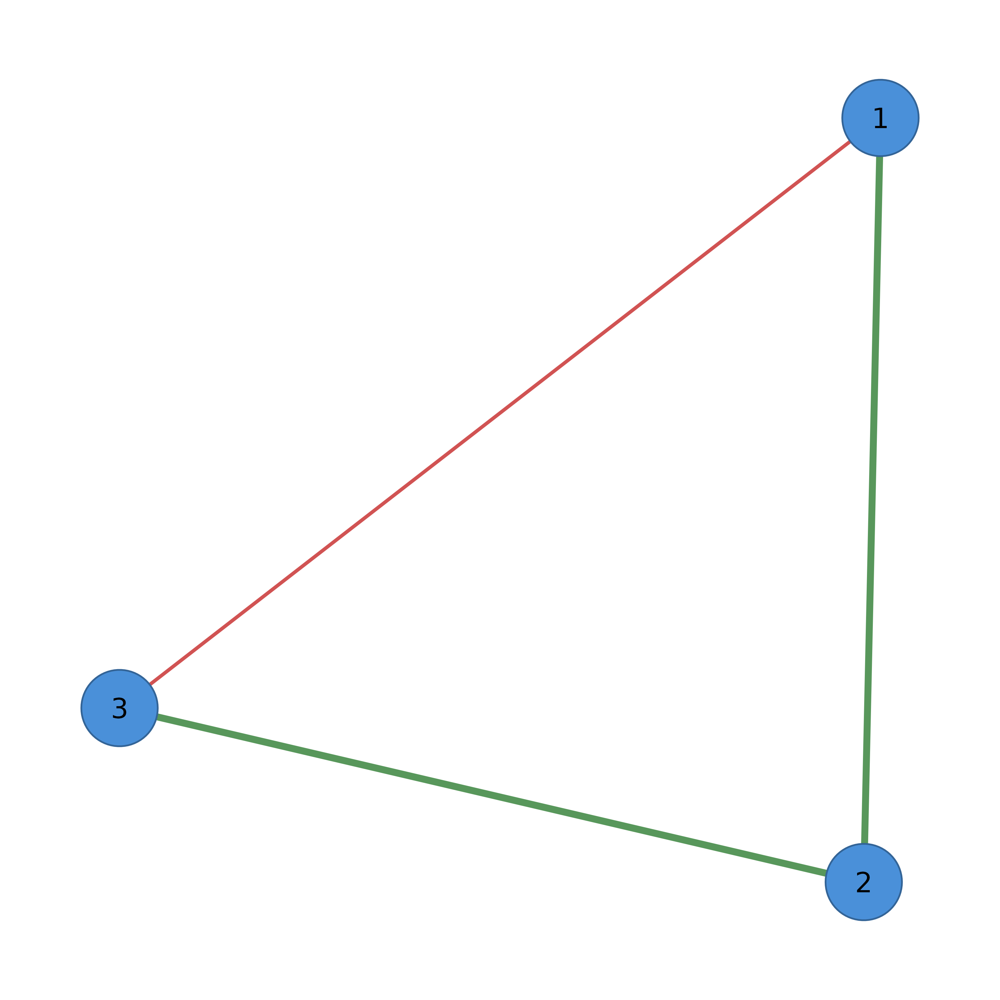

Customize the visual appearance of edges in a network plot.
Usage
sn_edges(
network,
width = NULL,
edge_size = NULL,
esize = NULL,
edge_width_range = NULL,
edge_scale_mode = NULL,
edge_cutoff = NULL,
cut = NULL,
color = NULL,
edge_positive_color = NULL,
positive_color = NULL,
edge_negative_color = NULL,
negative_color = NULL,
alpha = NULL,
style = NULL,
curvature = NULL,
arrow_size = NULL,
show_arrows = NULL,
maximum = NULL,
width_scale = NULL,
labels = NULL,
label_size = NULL,
label_color = NULL,
label_position = NULL,
label_offset = NULL,
label_bg = NULL,
label_bg_padding = NULL,
label_fontface = NULL,
label_border = NULL,
label_border_color = NULL,
label_underline = NULL,
label_shadow = NULL,
label_shadow_color = NULL,
label_shadow_offset = NULL,
label_shadow_alpha = NULL,
bidirectional = NULL,
loop_rotation = NULL,
curve_shape = NULL,
curve_pivot = NULL,
curves = NULL,
ci = NULL,
ci_scale = NULL,
ci_alpha = NULL,
ci_color = NULL,
ci_style = NULL,
ci_arrows = NULL,
ci_lower = NULL,
ci_upper = NULL,
label_style = NULL,
label_template = NULL,
label_digits = NULL,
label_ci_format = NULL,
label_p = NULL,
label_p_digits = NULL,
label_p_prefix = NULL,
label_stars = NULL
)Arguments
- network
A cograph_network object, matrix, data.frame, or igraph object. Matrices and other inputs are auto-converted.
- width
Edge width. Can be a single value, vector (per-edge), or "weight".
- edge_size
Base edge size for weight scaling. NULL (default) uses adaptive sizing based on network size:
15 * exp(-n_nodes/90) + 1. Larger values = thicker edges.- esize
Deprecated. Use
edge_sizeinstead.- edge_width_range
Output width range as c(min, max) for weight-based scaling. Default c(0.5, 4). Edges are scaled to fit within this range.
- edge_scale_mode
Scaling mode for edge weights: "linear" (default), "log" (for wide weight ranges), "sqrt" (moderate compression), or "rank" (equal visual spacing).
- edge_cutoff
Two-tier cutoff for edge width scaling. NULL (default) = auto 75th percentile. 0 = disabled. Positive number = manual threshold.
- cut
Deprecated. Use
edge_cutoffinstead.- color
Edge color. Can be a single color, vector, or "weight" for automatic coloring based on edge weights.
- edge_positive_color
Color for positive edge weights.
- positive_color
Deprecated. Use
edge_positive_colorinstead.- edge_negative_color
Color for negative edge weights.
- negative_color
Deprecated. Use
edge_negative_colorinstead.- alpha
Edge transparency (0-1).
- style
Line style: "solid", "dashed", "dotted", "longdash", "twodash".
- curvature
Edge curvature amount (0 = straight).
- arrow_size
Size of arrow heads for directed networks.
- show_arrows
Logical. Show arrows? Default TRUE for directed networks.
- maximum
Maximum edge weight for scaling width. Weights above this are capped. Similar to qgraph's maximum parameter.
- width_scale
Scale factor for edge widths. Values > 1 make edges thicker, values < 1 make them thinner. Applied after all other width calculations.
- labels
Edge labels. Can be TRUE (show weights), a vector, or column name.
- label_size
Edge label text size.
- label_color
Edge label text color.
- label_position
Position along edge (0 = source, 0.5 = middle, 1 = target).
- label_offset
Perpendicular offset from edge line.
- label_bg
Background color for edge labels (default "white"). Set to NA for transparent.
- label_bg_padding
Padding around label text as proportion of text size (default 0.3).
- label_fontface
Font face: "plain", "bold", "italic", "bold.italic" (default "plain").
- label_border
Border style: NULL (none), "rect", "rounded", "circle" (default NULL).
- label_border_color
Border color for label border (default "gray50").
- label_underline
Logical. Underline the label text? (default FALSE).
- label_shadow
Logical. Enable drop shadow for labels? (default FALSE).
- label_shadow_color
Color for label shadow (default "gray40").
- label_shadow_offset
Offset distance for shadow in points (default 0.5).
- label_shadow_alpha
Transparency for shadow (0-1, default 0.5).
- bidirectional
Logical. Show arrows at both ends of edges?
- loop_rotation
Angle in radians for self-loop direction (default: pi/2 = top).
- curve_shape
Spline tension for curved edges (-1 to 1, default: 0).
- curve_pivot
Pivot position along edge for curve control point (0-1, default: 0.5).
- curves
Curve mode: FALSE (straight edges), "mutual" (only curve reciprocal pairs), or "force" (curve all edges). Default FALSE.
- ci
Numeric vector of CI widths (0-1 scale). Larger values = more uncertainty.
- ci_scale
Width multiplier for CI underlay thickness. Default 2.
- ci_alpha
Transparency for CI underlay (0-1). Default 0.15.
- ci_color
CI underlay color. NA (default) uses main edge color.
- ci_style
Line type for CI underlay: 1=solid, 2=dashed, 3=dotted. Default 2.
- ci_arrows
Logical: show arrows on CI underlay? Default FALSE.
- ci_lower
Numeric vector of lower CI bounds for labels.
- ci_upper
Numeric vector of upper CI bounds for labels.
- label_style
Preset style: "none", "estimate", "full", "range", "stars".
- label_template
Template with placeholders: {est}, {range}, {low}, {up}, {p}, {stars}.
- label_digits
Decimal places for estimates in template. Default 2.
- label_ci_format
CI format: "bracket" for
[low, up]or "dash" forlow-up.- label_p
Numeric vector of p-values for edges.
- label_p_digits
Decimal places for p-values. Default 3.
- label_p_prefix
Prefix for p-values. Default "p=".
- label_stars
Stars for labels: character vector, TRUE (compute from p), or numeric (treated as p-values).
Value
Modified cograph_network object that can be piped to further customization functions or plotting functions.
Details
Vectorization
Most aesthetic parameters can be specified as:
Single value: Applied to all edges
Vector: Per-edge values (must match edge count)
"weight": Special value for
widthandcolorthat auto-maps from edge weights
Weight-Based Styling
When color = "weight", edges are colored by sign:
Positive weights use
edge_positive_color(default: green)Negative weights use
edge_negative_color(default: red)
When width = "weight", edge widths scale with absolute weight values,
respecting the maximum parameter if set.
Edge Label Templates
For statistical output (e.g., regression coefficients with CIs), use templates:
label_template = "\{est\}": Show estimate onlylabel_template = "\{est\} [\{low\}, \{up\}]": Estimate with CIlabel_template = "\{est\}\{stars\}": Estimate with significance
Preset styles via label_style:
"estimate": Weight/estimate only"full": Estimate + CI in brackets"range": CI range only"stars": Significance stars
Examples
adj <- matrix(c(0, 1, -0.5, 1, 0, 1, -0.5, 1, 0), nrow = 3)
# Basic: auto-style by weight
cograph(adj) |>
sn_edges(width = "weight", color = "weight")
#> Cograph Network
#> ==============
#> Nodes: 3
#> Edges: 3
#> Directed: FALSE
#> Weighted: TRUE
#> Layout: computed
#> Theme: classic
#>
#> Use plot() or sn_render() to visualize
#> Use sn_ggplot() to convert to ggplot2
# Direct matrix input (auto-converted)
adj |> sn_edges(width = 2, color = "gray50")
#> Cograph Network
#> ==============
#> Nodes: 3
#> Edges: 3
#> Directed: FALSE
#> Weighted: TRUE
#> Layout: computed
#> Theme: classic
#>
#> Use plot() or sn_render() to visualize
#> Use sn_ggplot() to convert to ggplot2
# Custom positive/negative colors
cograph(adj) |>
sn_edges(
color = "weight",
edge_positive_color = "darkblue",
edge_negative_color = "darkred"
) |>
splot()

# Edge labels showing weights
cograph(adj) |>
sn_edges(labels = TRUE, label_size = 0.8) |>
splot()
# Statistical output with CI template
# Suppose we have estimates, lower/upper CI bounds
estimates <- c(0.5, -0.3, 0.8)
ci_lo <- c(0.2, -0.6, 0.5)
ci_hi <- c(0.8, -0.1, 1.1)
if (FALSE) { # \dontrun{
cograph(adj) |>
sn_edges(
label_template = "{est} [{low}, {up}]",
ci_lower = ci_lo,
ci_upper = ci_hi,
label_digits = 2
) |>
splot()
} # }
# Curved edges for reciprocal pairs
cograph(adj) |>
sn_edges(curves = "mutual", curvature = 0.3) |>
splot()